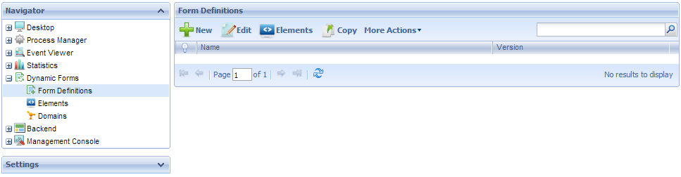

The Dynamic Forms menu consists of a group of applications whose purpose is to allow the user to create new dynamic form definitions as well as the elements and domains used in them. It also allows making changes to the existing ones. Dynamic Forms are forms that can be changed in runtime. The purpose of Dynamic forms is to allow completing the Model Automation stage without the need for adding a single line of code; in other words, it gives the user the possibility to add a user task without programming a new Web Panel object or adding a Transaction object. With Dynamic Forms the user will be able to create or edit forms at runtime, associate them to Business Process Diagram objects and execute them. All information associated to them will be saved and mantained in the Workflow tables. By default, only users with the GXflow Form Designer rol will have access to this menu—read Backend for details on how to allow other roles to access the Dynamic Forms menu.  The Dynamic Forms menu has the following components: For an overview of the GXflow Standard client please refer to the following section: GXflow Client General Structure. See Also
|
| Backlinks | ||
| Domains for Dynamics Forms | ||
| Elements | Form Definition | Form Definitions |
| Toc:GeneXus BPM Suite | GXflow Client General Structure | |